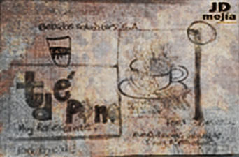
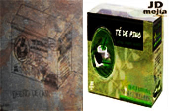
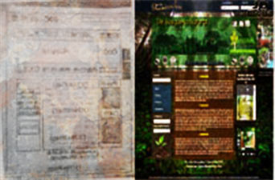
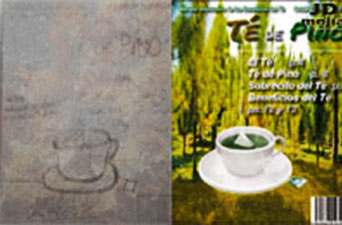
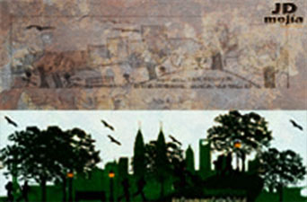

Portafolio





Juan Diego Mejía
En este sitio web encontraras Mi Portafolio de Trabajos que he realizado durante el tiempo que he estudiado Diseño Gráfico, Web y 3D.
En el año 2013 incio estudiando Diseño Gráfico, durante el siguiente año lo continuo, ya en el 2015 comienzo a estudiar Diseño Web y Diseño Arquitectonico (Maquetación 3D) y durante este año 2016 continuo con el Diseño web y 3D.
Proyectos

Desarrollo
El Desarrollo de un Proyecto siempre debe iniciar con una idea clara e ilustrada (bocetos).

Diseño Creativo
El Diseño Creativo debe ser una buena opción cuando se deispone de tiempo.

Planificación
Un Proyecto siempre necesita de una buena planificación (cronograma de actividades).
Estrategias
En el Diseño de un Proyecto siempre debe de haber una estrategia a seguir.